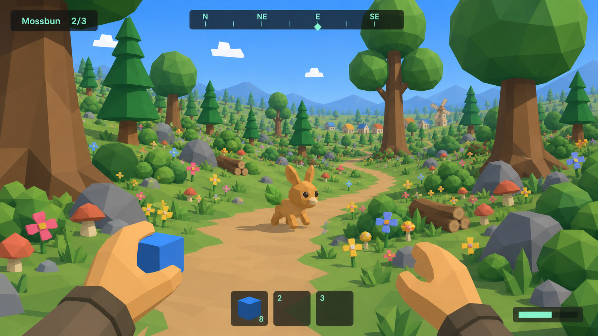

meadow-vista
Reference composition: eye-level meadow, path + scatter + framing trees, village/windmill distant.


Reference composition: eye-level meadow, path + scatter + framing trees, village/windmill distant.

Near-field scatter density: grass tufts, flowers, mushrooms, small rocks.

Tree trunks/canopies from inside the forest; conifer + broadleaf mix.

Crag silhouettes + rock palette.

Highland rolling terrain + tree line.

Water edge, reeds, lilypads.

Haven village houses/roofs/windmill from the meadow approach.

Castle silhouette from the approach.

Night palette: sky stops, stars, moon (should stay dark vs day).

First-person hands + full HUD (compass/hotbar/counters) at spawn.

All species turntable (?preview=critters) — chunky bodies, big eyes bar.